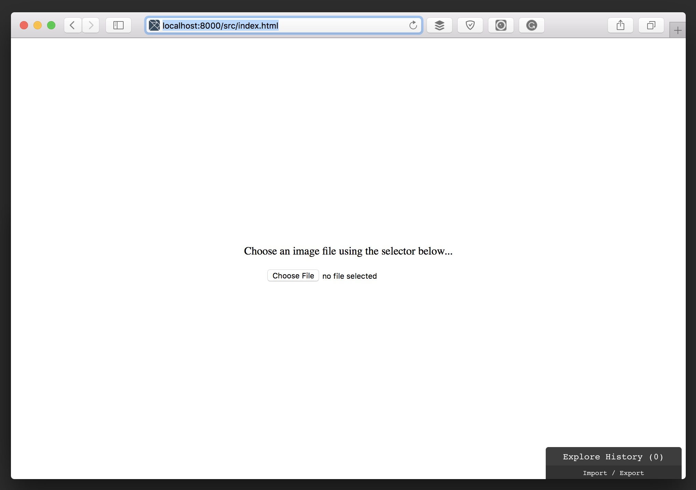
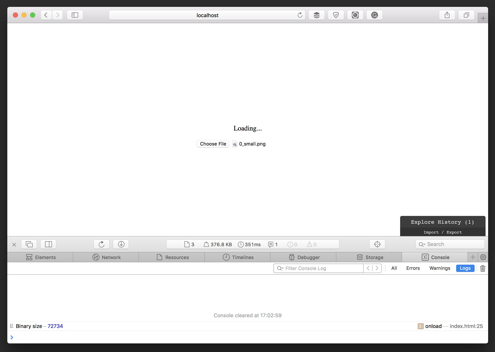
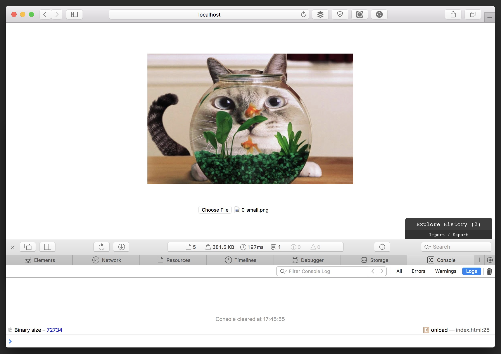
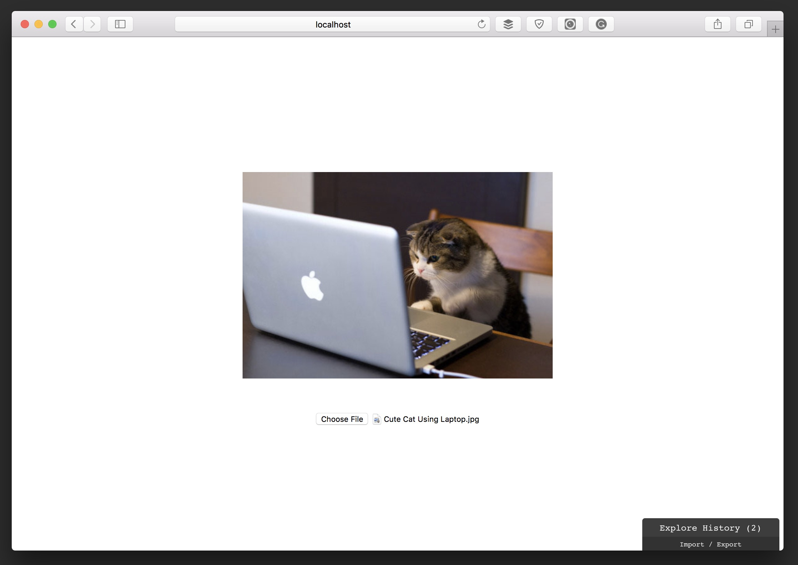

Huge thanks to my teammate Alvaro for the Elm masterclasses and his endless patience :)
These have been very exciting weeks of development at The Book of Everyone. We have been migrating a crucial part of our core functionality to Elm. This hard work includes not only front-end stuff, but also other cool features like static assets downloading and caching, running server-side Elm applications through Elixir ports and Node, and creating our Elm Native modules for the not supported stuff. Before these weeks, Native modules were something that I have not used before, so I would like to give you a small introduction to them, just in case you might find it useful in the future. But before, let's start by understanding how Elm communicates with external code.
Elm ports
If you are into Elm, then you should probably know that an Elm application is like a bulletproof box, where any interaction with the outside world needs to be done through a very specific API. If you want to communicate with external JavaScript code from your application, you need to use Ports to handle the incoming and outgoing messages. These ports have to be defined correctly as any other function in Elm, so nothing weird happens to break the application. The problem with this is that your project is going to be tightly coupled to external code, which makes it difficult to share or reuse, especially when building libraries that might be included in other projects.
To understand it better let's build a very simple application which has an HTML file input, and that renders a preview of any selected image with it.
The setup
Let's start by creating a new Elm project by running the following command from your terminal:
$ elm package install elm-lang/html -y
The output is something like this:
Starting downloads...
● elm-lang/html 2.0.0
● elm-lang/virtual-dom 2.0.4
● elm-lang/core 5.1.1
Packages configured successfully!
If you check the folder's content, you can find an elm-stuff folder and a elm-package.json file. Let's open it to edit its content to be something similar to the following:
{
"version": "1.0.0",
"summary": "helpful summary of your project, less than 80 characters",
"repository": "https://github.com/user/project.git",
"license": "BSD3",
"source-directories": [
"."
],
"exposed-modules": [],
"dependencies": {
"elm-lang/core": "5.1.1 <= v < 6.0.0",
"elm-lang/html": "2.0.0 <= v < 3.0.0"
},
"elm-version": "0.18.0 <= v < 0.19.0"
}
I usually create an src folder as the main directory of my project, so let's update the config file to reflect this...
{
...
"source-directories": [
"src"
],
...
}
...and create the src folder:
$ mkdir src
Next, let's create an src/Main.elm file with the following content:
-- src/Main.elm
module Main exposing (main)
import Html exposing (Html, text)
main : Html msg
main =
text "Hello, Elm!"
We are also going to create a very basic src/index.html in which we are going to render the Elm application:
<!-- src/index.html -->
<!DOCTYPE html>
<html>
<head>
<meta charset="utf-8" />
<title>Elm FileReader</title>
</head>
<body>
<div id="main"></div>
<script src="main.js"></script>
<script>
const elmDiv = document.querySelector('#main');
if (elmDiv) {
const app = Elm.Main.embed(elmDiv);
}
</script>
</body>
</html>
Once these two files are ready, let's build the project using Elm's make:
$ elm make --warn --debug src/Main.elm --output src/main.js
Now we can start Elm's reactor by typing elm reactor and visit http://localhost:8000/src/index.html to check that the Hello, Elm! text gets displayed in our browser :)
Elm basic modules
Now that we have setup the project and we have checked that everything is working fine let's start building the basic Elm Architecture modules. The first of these modules is the Model, so let's add a new src/Model.elm file with the following content:
-- src/Model.elm
module Model exposing (..)
type ImageData e s
= NotLoaded
| Loading
| Error e
| Success s
type alias Model =
{ imageData : ImageData String String }
initialModel : Model
initialModel =
{ imageData = NotLoaded }
The model consist of an ImageData type which can have different values:
NotLoadedfor the initial state.Loadingfor when the file is selected, and it calls the port for reading the file's content.Error rrepresents a failure while reading the file.Success smeans that reading the file is successful, having its binary content.
Now let's define a default message, by creating a src/Messages.elm file:
-- src/Messages.elm
module Messages exposing (Msg(..))
type Msg
= NoOp
Let's do the same with the Update module, to handle the NoOp message:
-- src/Update.elm
module Update exposing (update)
import Messages exposing (Msg(..))
import Model exposing (..)
update : Msg -> Model -> ( Model, Cmd Msg )
update msg model =
case msg of
NoOp ->
model ! []
Next, we can create the View module as follows:
-- src/View.elm
module View exposing (view)
import Html exposing (..)
import Html.Attributes exposing (..)
import Messages exposing (Msg(..))
import Model exposing (Model, ImageData(..))
view : Model -> Html Msg
view model =
section
[ sectionStyles ]
[ imageView model.imageData
, input
[ type_ "file"
, accept "image/*"
]
[]
]
sectionStyles : Html.Attribute Msg
sectionStyles =
style
[ ( "height", "100vh" )
, ( "display", "flex" )
, ( "justify-content", "center" )
, ( "align-items", "center" )
, ( "flex-direction", "column" )
]
imageView : ImageData String String -> Html Msg
imageView imageData =
case imageData of
NotLoaded ->
p
[]
[ text "Choose an image file using the selector below..." ]
Loading ->
p
[ text "Loading..." ]
Error error ->
p
[]
[ text error ]
Success binary ->
img
[ style
[ ( "max-height", "300px" )
, ( "margin-bottom", "3rem" )
]
, src binary
]
[]
Please note that in the imageView function we render the necessary HTML depending on the model's imageData current value, proving how convenient is using a union type as its value in this case.
To wrap everything together let's update the original Main module, and make it look like this:
-- src/Main.elm
module Main exposing (..)
import Html exposing (Html)
import Messages exposing (Msg(..))
import Model exposing (Model, initialModel)
import Update exposing (update)
import View exposing (view)
init : ( Model, Cmd Msg )
init =
initialModel ! []
main : Program Never Model Msg
main =
Html.program
{ init = init
, view = view
, update = update
, subscriptions = (\_ -> Sub.none)
}
To check the result of these changes, build the project again and visit http://localhost:8000/src/index.html, seeing something similar to:

Let's move on to the ports part. What we want to do is, once a file is selected, read its binary content using JavaScript's FileReader object, and return it to the application to render the image. Having this in mind, let's create an src/Ports.elm file with the two different ports we need:
-- src/Ports.elm
port module Ports exposing (fileSelected, fileLoaded)
import Json.Decode as JD
-- Out ports
port fileSelected : JD.Value -> Cmd msg
-- In ports
port fileLoaded : (String -> msg) -> Sub msg
The fileSelected port gets triggered once we select a file using the input in the view, so let's update the view to add the on change event:
-- src/View.elm
module View exposing (view)
import Html.Events exposing (on)
import Json.Decode as JD
-- ...
view : Model -> Html Msg
view model =
section
[ sectionStyles ]
[ imageView model.imageData
, input
[ type_ "file"
, accept "image/*"
, on "change" <| JD.map FileSelected JD.value
]
[]
]
The change event triggers a new FileSelected message that we still need to define in the Messages module, so let's add it:
-- src/Messages.elm
module Messages exposing (Msg(..))
import Json.Decode as JD
type Msg
= FileSelected JD.Value
We have to edit as well the Update module to handle the new message:
-- src/Update.elm
module Update exposing (update)
import Ports exposing (fileSelected)
-- ...
update : Msg -> Model -> ( Model, Cmd Msg )
update msg model =
case msg of
FileSelected event ->
{ model | imageData = Loading } ! [ fileSelected event ]
The FileSelected message has the event, which is sent through the port to the outer world, and to which we can now subscribe from the index.html file, so let's update it:
<!-- src/index.html -->
<!DOCTYPE html>
<html>
<head>
<meta charset="utf-8" />
<title>Elm FileReader</title>
</head>
<body>
<div id="main"></div>
<script src="main.js"></script>
<script>
const elmDiv = document.querySelector('#main');
if (elmDiv) {
const app = Elm.Main.embed(elmDiv);
app.ports.fileSelected.subscribe(function (e) {
const input = e.target;
const file = input.files[0];
const reader = new FileReader();
reader.onload = (function (event) {
const binary = event.target.result;
console.log('Binary size', binary.length);
app.ports.fileLoaded.send(binary);
});
reader.onerror = (function (err) {
console.error(err);
});
reader.readAsDataURL(file);
});
}
</script>
</body>
</html>
To receive messages from Elm, we only need to subscribe to any of the defined ports. In this case app.ports.fileSelected.subscribe receives the event triggered once selected the file, takes the file and using FileReader tries to load the content. If it is successful, it logs through the console its length and sends the content through the previous defined fileLoaded port. Let's rebuild the project and refresh the browser to check if it works correctly:

Cool, it seems to be working perfectly. However, we still need to handle the fileLoaded port to set the file content into the application's model and render it. As in the JavaScript side, Elm handles external ports by subscribing to them, so let's create a new src/Subscriptions.elm file with the following content:
-- src/Subscriptions.elm
module Subscriptions exposing (subscriptions)
import Messages exposing (Msg(..))
import Model exposing (Model)
import Ports exposing (fileLoaded)
subscriptions : Model -> Sub Msg
subscriptions model =
Sub.batch [ fileLoaded FileLoaded ]
Don't forget about updating the Main module, so it uses the subscriptions function:
-- src/Main.elm
module Main exposing (..)
import Subscriptions exposing (subscriptions)
-- ...
main : Program Never Model Msg
main =
Html.program
{ init = init
, view = view
, update = update
, subscriptions = subscriptions
}
The fileLoaded port will is going to be handled by a new FileLoaded message with the content of the file, which we have to add to the Messages module:
-- src/Messages.elm
module Messages exposing (Msg(..))
-- ...
type Msg
= FileSelected JD.Value
| FileLoaded String
Finally, we have to edit the Update module as well and implement the corresponding handler for it:
-- src/Update.elm
module Update exposing (update)
-- ...
update : Msg -> Model -> ( Model, Cmd Msg )
update msg model =
case msg of
-- ...
FileLoaded binary ->
{ model | imageData = Success binary } ! []
Setting the imageData key of the model as Success with the content of the file makes the view function render an image with that content as its src attribute, displaying the selected image in the browser. Let's rebuild the project and check it out:

It works, yay! In some cases, this is good enough. We have our application which depends on some ports to run properly, but as we do not need to use in any other place in the project, we can leave it like this. However, what if we want to reuse it somewhere else? It forces us, not only to take the Elm code but the related JavaScript as well, which in the new project might be handled very differently. Wouldn't it better having that JavaScript code encapsulated within the Elm application itself?
Elm Native modules
Fortunately, Elm has another way of dealing with external code, which is by using Native modules. These modules, usually written in Javascript, can be called from anywhere in your application instead of having to use ports. Some of the downsides are:
- The Native API is not officially documented and usually changes between different Elm versions making your application harder to upgrade and maintain.
- Elm applications using Native modules can make it have runtime errors due to relying on unsafe Javascript code, also making it more difficult to debug.
Although using custom Native modules is not usually recommended for these (and more) reasons, sometimes it makes sense using them, so let's refactor our application to remove the ports and move the external JavaScript code to a Native module.
The setup
The first thing we need to do is updating the the elm-package.json file adding these two changes:
{
...
"repository": "https://github.com/bigardone/elm-file-reader.git",
"native-modules": true
}
We need to add a proper repository name, which is vital for defining Native modules, and we also have to tell Elm that this project is going to use Native modules by setting native-modules to true.
The Native module
Next, let's create a new file in this path src/Native/FileReader.js with the following content:
// src/Native/FileReader.js
var _bigardone$elm_file_reader$Native_FileReader = (function () {
function readFile(e) {
// Content here...
}
return {
readFile,
};
}());
Here comes the tricky part. When compiling to Javascript, Elm takes the repository's name and username specified in the elm-package.json file to define the different functions, and this is the reason why naming your Native module this way is so important. Otherwise, it will not find your module at runtime. So we start by defining a _bigardone$elm_file_reader$Native_FileReader function, where _bighardone$elm_file_reader corresponds to the repository's user name and name. The final $Native_FileReader chunk of the name, corresponds to the module namespace, in this case, Native.FileReader. We also declare a readFile function, in which we are going to implement the reading logic. Finally, we return an object with the exposed functions of this module.
So far so good. Now let's add the missing functionality:
// src/Native/FileReader.js
var _bigardone$elm_file_reader$Native_FileReader = (function () {
function readFile(e) {
return _elm_lang$core$Native_Scheduler.nativeBinding(function (cb) {
var input = e.target;
var file = input.files[0];
var reader = new FileReader();
reader.onload = (function (event) {
var binary = event.target.result;
console.log('Binary size', binary.length);
cb(_elm_lang$core$Native_Scheduler.succeed(binary));
});
reader.onerror = (function (err) {
cb(_elm_lang$core$Native_Scheduler.fail(err.toString()));
});
reader.readAsDataURL(file);
});
}
return {
readFile,
};
}());
As reading a file is not only async but an impure action in Elm terms, we have to use a Task for it. That is why it returns a _elm_lang$core$Native_Scheduler.nativeBinding that takes a callback to use it once the task finishes. The rest of the code is pretty similar to the ports version, except for the fact that instead of calling a port when is ready or there is an error, it returns the callback with either a succeed or a fail call to tell Elm's runtime whether the task is successful or not.
Refactoring the existing modules
Once the native module is ready, let's get rid of the old modules we do not need any more, which are Ports and Subscriptions.
$ rm src/Ports.elm src/Subscriptions.elm
This change is going to break the build, so let's update the Main module to remove the corresponding imports and the subscriptions:
-- src/Main.elm
module Main exposing (..)
-- ...
main : Program Never Model Msg
main =
Html.program
{ init = init
-- ...
, subscriptions = (\_ -> Sub.none)
}
Same happens with the Update module. We no longer have to use a port for reading the file content, so let's edit it:
-- src/Update.elm
module Update exposing (update)
-- ...
import Native.FileReader
import Task
update : Msg -> Model -> ( Model, Cmd Msg )
update msg model =
case msg of
FileSelected event ->
{ model | imageData = Loading } ! [ readFile event ]
FileLoaded (Ok binary) ->
{ model | imageData = Success binary } ! []
FileLoaded (Err error) ->
{ model | imageData = Error error } ! []
readFile : JD.Value -> Cmd Msg
readFile =
Native.FileReader.readFile >> Task.attempt FileLoaded
In the FileSelected event message, along with the model, it now returns the readFile event command, which uses the new Native.FileReader.readFile function defined previously to read the selected file's content. As it is an asynchronous action and it might fail, we use Task.attempt to call it, passing the FileLoaded message to handle the result of the task, setting the content in the model when succeeds or the error when it fails. Changing this, forces us to change as well the Messages module to add this new message type:
-- src/Messages.elm
module Messages exposing (Msg(..))
import Json.Decode as JD
type Msg
= FileSelected JD.Value
| FileLoaded (Result String String)
The new FileLoaded type consists of a Result with a String for the error and another String for the binary content of the file. If we build the project again with elm make --warn --debug src/Main.elm --output src/main.js, start the reactor with elm reactor and visit http://localhost:8000/src/index.html, everything should be working as before:

And in fact it does, yay! Now our Elm application doesn't depend on the JavaScript in the index.htlm to work. Moreover, if we visit http://localhost:8000/src/Main.elm in our browser, which runs the Elm code without the JavaScript in the index.html file, everything works perfectly.
Conclusion
While building Elm applications, it is very common to use external JavaScript at some point. Ports are the official and safe way to go, but sometimes you need to encapsulate that external code in your application's core, and for that you can use Native modules, always knowing the drawbacks and at your own risk.
Happy coding!
comments powered by Disqus